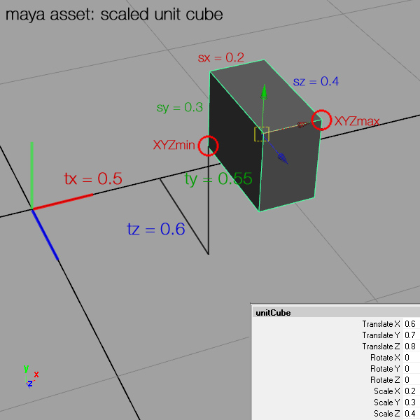

assetInfo function
Syntax
float assetInfo(filePath, attribute)
Parameters
- filePath (string)
Path to asset. See Asset Search for information about search locations. - attribute (selector)
sx, sy, sz, tx, ty, tz Specifies asset dimension or translation.
Returns
Returns asset sizes or translation.
Description
This function returns the sizes or translations of the asset defined in the filePath, depending on the specified attribute selector.
Related
Examples
Note.1: The translation values are calculated by the CityEngine based on the corner of the asset's bounding box, by using the corner with the lowest possible x, y and z coordinates (XYZmin).
Note.2: Note that any specific 3d transformations (in this example maya's translations X = 0.6, Y = 0.7, Z = 0.8) are not to be confused accidentally with the translations the CityEngine computes.

print(assetInfo("assets/unitCube.obj", sx))
print(assetInfo("assets/unitCube.obj", sy))
print(assetInfo("assets/unitCube.obj", sz))
print(assetInfo("assets/unitCube.obj", tx))
print(assetInfo("assets/unitCube.obj", ty))
print(assetInfo("assets/unitCube.obj", tz))
# results =
# 0.2
# 0.3
# 0.4
# 0.5
# 0.55
# 0.6
Copyright ©2008-2022 Esri R&D Center Zurich. All rights reserved.